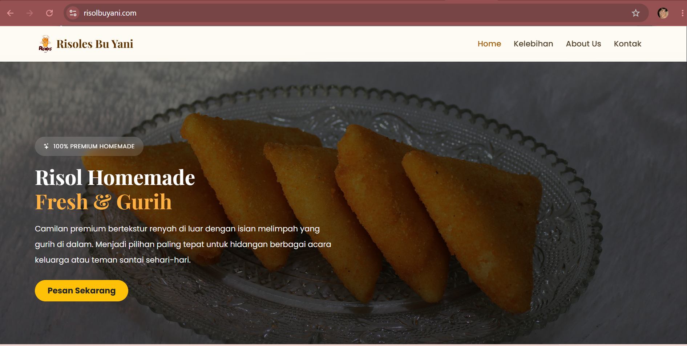
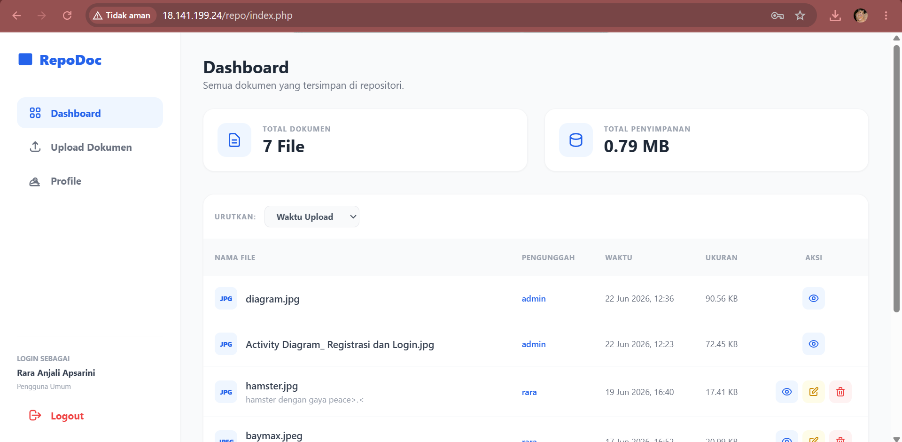
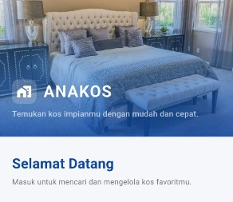

Mahasiswa Teknik Informatika
Rara Anjali Apsarini
UI/UX Designer • Web Developer • IoT Enthusiast
UI/UX Designer • Web Developer • IoT Enthusiast
Saya adalah Mahasiswa Teknik Informatika Universitas Maritim Raja Ali Haji (UMRAH) dengan ketertarikan pada bidang frontend development, UI/UX design, dan Internet of Things (IoT). Berpengalaman mengembangkan proyek berbasis web dalam tugas akademik maupun proyek pribadi. Memiliki kemampuan komunikasi, kerja sama tim, dan adaptasi teknologi yang baik.
Dengan latar belakang akademik di bidang Teknik Informatika, saya terus mengembangkan kemampuan dalam pengembangan web, desain antarmuka pengguna, serta teknologi Internet of Things. Saya menikmati proses memecahkan masalah melalui pendekatan yang terstruktur dan selalu berusaha menghasilkan solusi yang tidak hanya berfungsi dengan baik, tetapi juga memberikan pengalaman pengguna yang optimal.
Mahasiswa Teknik Informatika
Mempelajari Manajemen Basis Data, Etika Profesi IT, Analisis Proses Bisnis, Pemrograman Web, dan Pengembangan Aplikasi Mobile. Aktif dalam proyek kolaboratif IT.
Mempelajari ilmu dasar saintek dengan fokus pada analisis logis dan ilmu agama islam yang lebih dalam.

Situs web komersial atau landing page kuliner yang difungsikan sebagai platform katalog dan pemesanan online untuk produk camilan risoles rumahan premium.

Website repositori dokumen berbasis cloud yang dirancang untuk memudahkan pengelolaan, penyimpanan, dan distribusi dokumen secara terpusat yang memanfaatkan layanan Amazon EC2 sebagai server aplikasi dan Amazon S3 sebagai media penyimpanan dokumen.

Aplikasi mobile berbasis Flutter untuk membantu mahasiswa di Tanjungpinang menemukan kos-kosan terdekat.